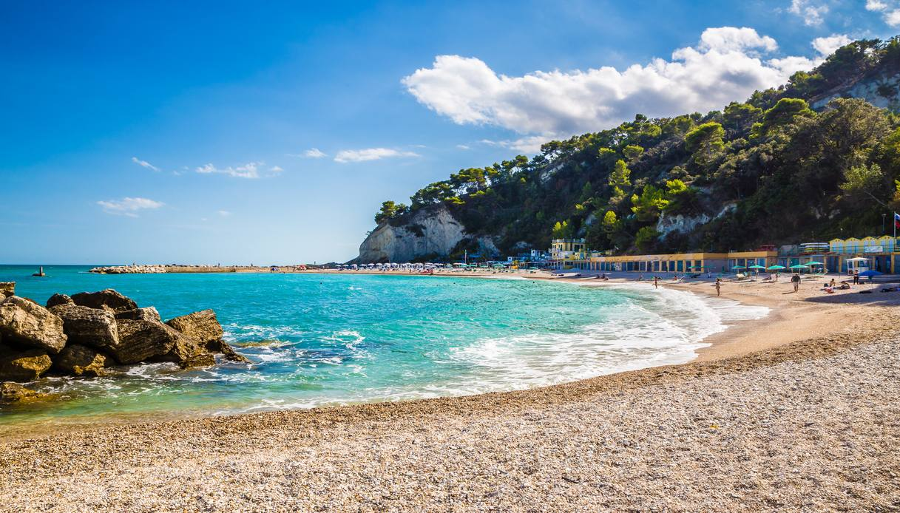
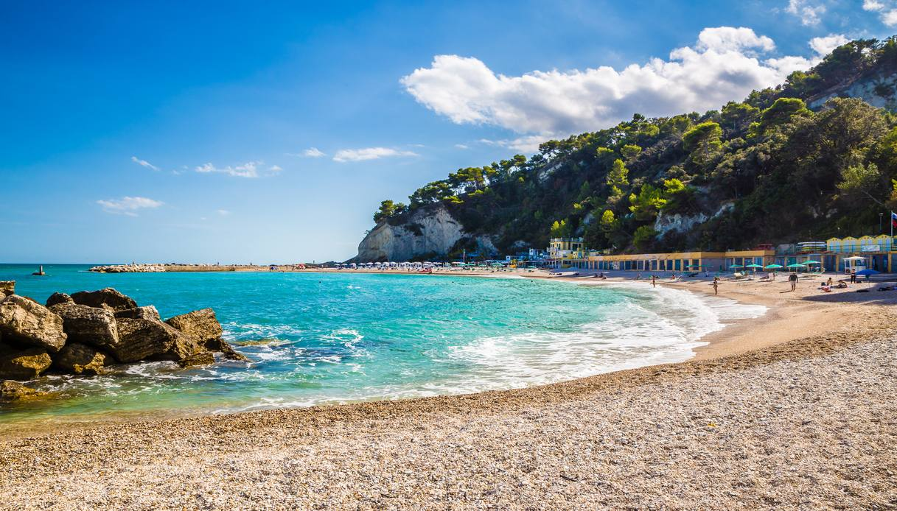

La spiaggia delle due sorelle è una spiaggia di ghiaia fine o ciottoli,
si raggiunge a questa spiaggia solo tramite nave essendo che non ci sono delle stradine per raggiungerla a piedi o in macchina ,
per arrivare nella spiaggia bisogna nuotare essendo che solo certe navi hanno il permesso di avviccinarsi alla spiaggia,
e circondata da un'ampia caletta immersa nella natura incontaminata e Chiamata così per i due scogli gemelli che emergono dalle acque cristalline.

Acque limpide e trasparenti e paesaggio mozzafiato: questi gli ingredienti che rendono Numana uno dei paesi più affascinati alle pendici del Conero.
Le sue spiagge meravigliose si estendono per chilometri e le sue acque limpide e pulite vengono premiate da anni con il titolo di Bandiera Blu europea.
Due anime convivono in Numana, quella più pittoresca e caratteristica racchiusa nella parte alta della cittadina detta appunto Numana alta,
e quella più movimentata degli stabilimenti balneari che in un colorato susseguirsi arrivano fino a Marcelli nella parte bassa di Numana.
 

La Spiaggia Urbani è una delle spiagge più famose di Sirolo.
Si trova proprio alle pendici del borgo ed è facilmente raggiungibile sia con i mezzi che a piedi.
Da qui si può godere di uno splendido panorama sul Monte Conero e la particolarità di questa spiaggia che è Situata in mezzo al verde del Parco del Conero e ha acqua cristallina,
è presente pure un'insenatura da un lato e una bellissima grotta naturale.

La spiaggia di san michele: completamente immersa nel verde del Monte Conero.
Una spiaggia ampia e lunga ideale per rilassarsi o passeggiare. Di fronte il mare, alle spalle il verde della macchia mediterranea.
la spiaggia dei sassi neri: Prende il nome dalle rocce scure del suo fondale. Si raggiunge a piedi dalla spiaggia di San Michele.